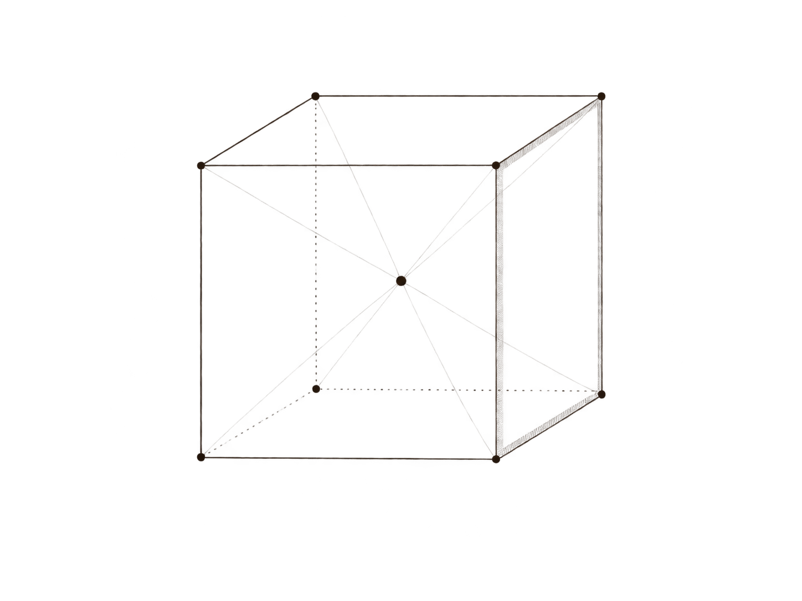
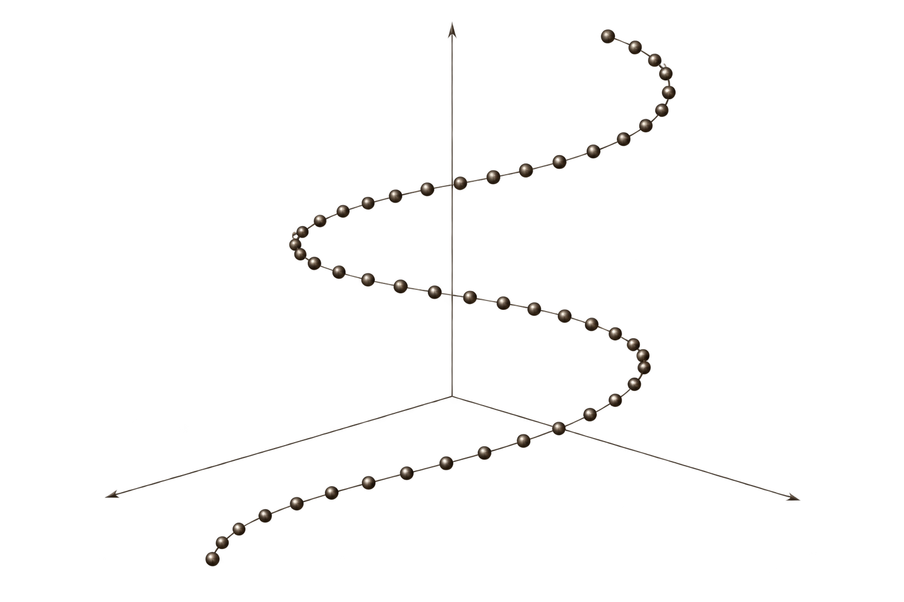
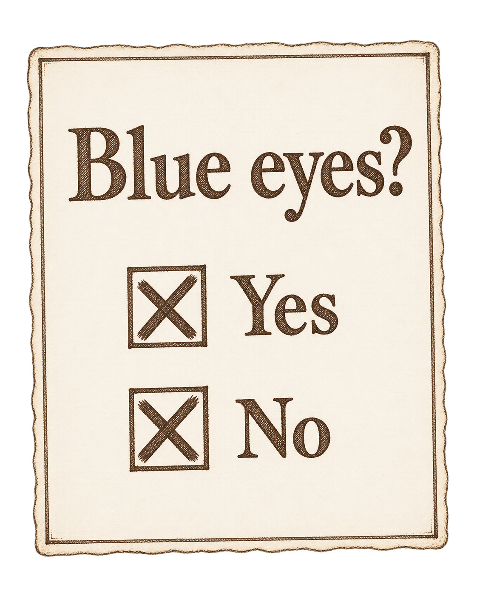
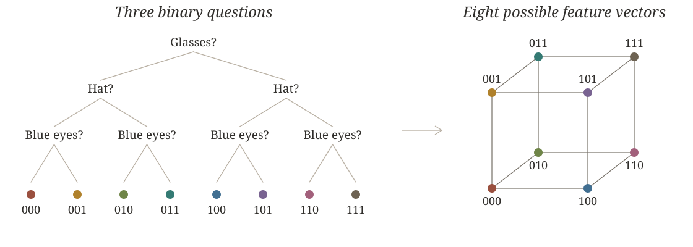
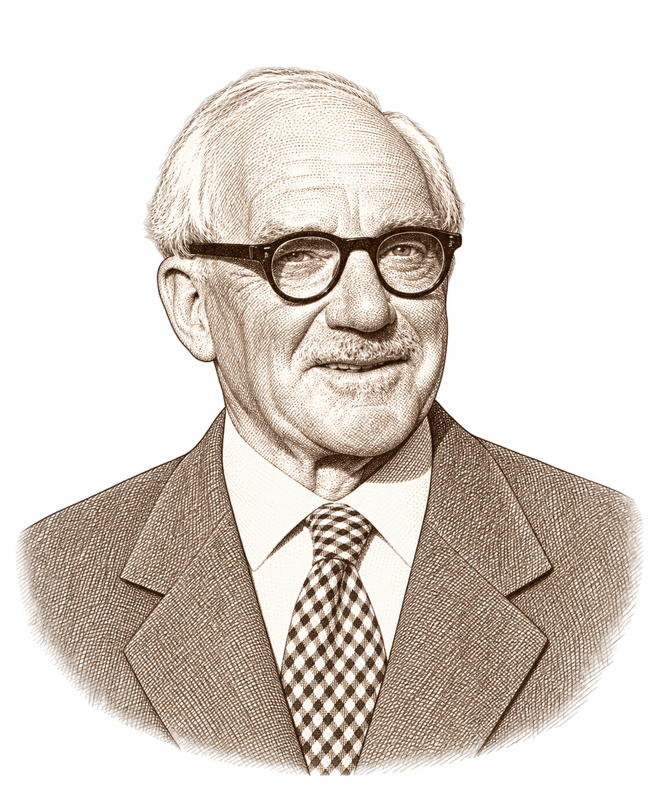

Entropy, addition, and hearing through the noise

Chapter 1: In Claude we trust
Shannon entropy
In 1948, Claude Shannon produced A Mathematical Theory of Communication and introduced the notion of (Shannon) entropy, which measures the uncertainty involved in predicting a random event.
Shannon's key insight was that information is measured by the uncertainty it resolves. We can measure this by asking:
How much does knowing the value of \(\ Y\) help me narrow my search for \(X\)?
Entropy helps you strategize.
For example, suppose we are trying to identify a mystery member, call that person \(X\), of a given population. We might like to know how helpful it would be to know \(X\)'s eye colour, let's call that \(Y\).
For simplicity, let's say \(Y\) can be one of brown or blue. The effectiveness of this information depends on the relative population sizes of each observable value. So we track those:
How good is the question?
The formula
Remaining uncertainty and the Chain Rule
Once you have learned the value of \(Y\), you carry on asking further questions. The remaining uncertainty that needs to be resolved is called the conditional entropy.
Here \(Y\) is a feature of \(X\): knowing the person also tells us their eye colour. The chain rule splits the uncertainty in \(X\) into the uncertainty resolved by learning \(Y\), plus the uncertainty that remains. We can identify \(X\) in stages, and the average numbers of halvings add up.
When two bins won't suffice
Chapter 2: Noise
Learning through observation
Imagine trying to learn a data distribution through repeated observation.
Life is messy
In reality, this process is imperfect — data is corrupted or measurements are imprecise. The result is noise, represented as random perturbations of the signal.
The Entropy Power Inequality
The difficulty in recovering the true signal can be quantified using entropy. We want to learn \(X\) from the perturbed signal \(X+Z\). The inherent uncertainty is measured by \(H(X\mid X+Z)\).
Adding noise blurs the signal; EPI limits how much uncertainty can remain behind that blur.
Let \(X,Z\in\mathbb R^d\) be independent random vectors with sufficiently nice probability densities. Then there is an entropy constraint
Dimensionality. Not all it's cracked up to be...
Masquerading in many dimensions
Discrete data might appear \(d\)-dimensional, but that doesn't mean it is. If the distinguishing features lie in far fewer dimensions, a limited noise budget might still be enough to obscure them all.

One-dimensional noise
Matched numerical entropy: \(H(T)=H(Z)\). Here \(L=T(\cos\theta,\sin\theta)\), with \(\sigma_T\approx66.1\) and \(\sigma_Z=4\) in the original image coordinates. The scale matches the two-dimensional example; points outside the view are not plotted.
Chapter 3: Boolean vectors
Guess Who, again
I like to imagine playing Guess Who with my two boys, who are six and two. The older boy answers honestly, while the younger is unreliable. But the little one will freak out if I ignore his answers, so I agree to take the average of their answers.
So the big guy gives reliable data, while the younger child independently chooses their own answer according to some mysterious logic. I get to see only the averages, \((X+Y)/2\). I still want to win, and I would like to know just how hard it's going to be...

The Boolean Cube
Do they wear glasses? A hat? Have blue eyes? When data is understood through binary questions, the resulting feature vectors are represented by a vertex of the Boolean cube.

Disagreement creates uncertainty
This simple equation captures the gist of the problem. When the boys agree, I can be sure of the honest answer. Disagreement, however, leaves me guessing
The challenge of denoising is that the signal can break into truth and noise in multiple ways, and we can't tell which actually happened.
Mathematicians call these are additive quadruples. These help clear up the role of dimension: competing explanations must cause a collision of each feature simultaneously.
An EPI for the cube
Mercifully, the Boolean cube isn't allowed to concentrate in fewer dimensions without causing its entropy to collapse. This allows us to recover EPI-type estimates.
Suppose \(X,Y\in\{0,1\}^d\) are independent random vectors, distributed on the vertices of the cube however you like. With ordinary coordinatewise addition, we get the inequality
Two draws, one average: the theorem in action
\(X\)
\(Y\)
\(Z=(X+Y)/2\)
One feature, two Bernoulli variables
For a single question, each answer is modelled by the toss of a (possibly unfair) coin. The quantity we are tracking is
and the assertion is that it is non-negative. You can observe this by tweaking the odds of \(X\) and \(Y\) on the graph below.
The \(d\)-dimensional result follows this by handling one coordinate at a time and using the Chain Rule.
Chapter 4: The classification problem
Understanding extremes

“It can pay to find out what is the worst enemy of what you want to prove, and then induce him to change sides.”
(my great grandpa)
Predicting the shape of the noise
One of the perks of entropy is that it lets us understand when equality occurs in the estimate. It turns out to only happen under very precise conditions: both random variables must be indentically distributed and uniform on subcubes. This means that some features are fair coin tosses, while all others are fixed, a copy of a free bit, or its opposite.
To make my life most difficult, my kids must conspire perfectly!
What remains
That classification is super rigid, but is it robust? What we would really like to know is if the zoo of distributions contains any other dangerous beasts:
When \(H(X|X+Y)\) is nearly as large as \(\frac14 H(X)+\frac14H(Y)\),
are \(X\) and \(Y\) nearly uniform on a cube?